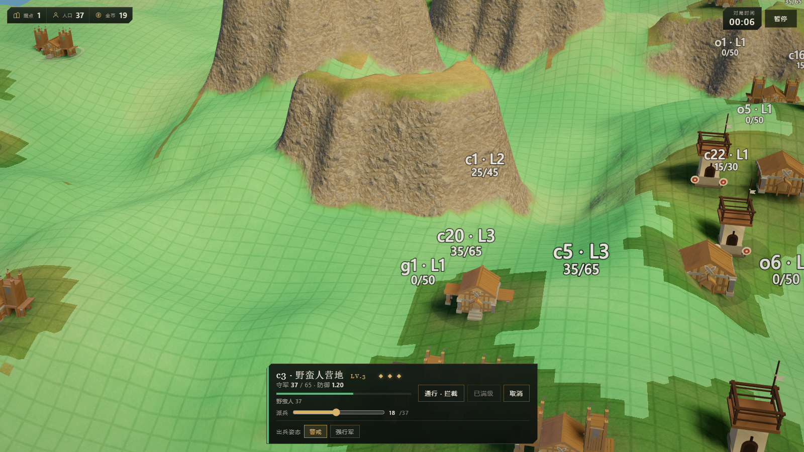
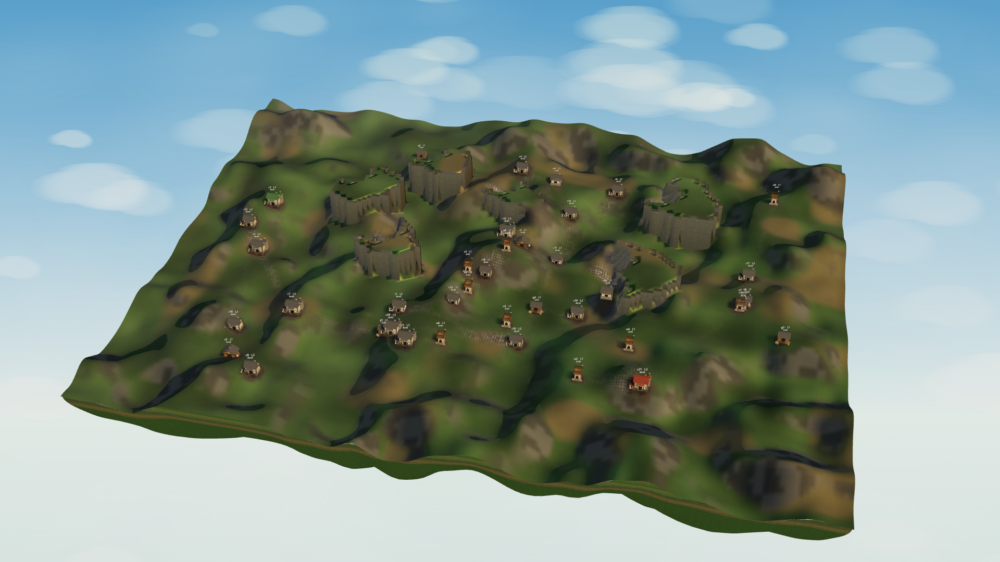
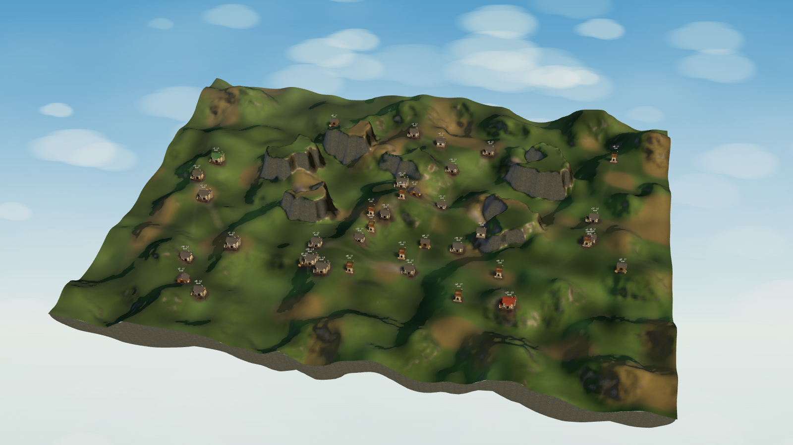
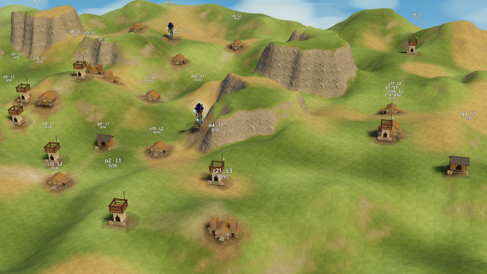
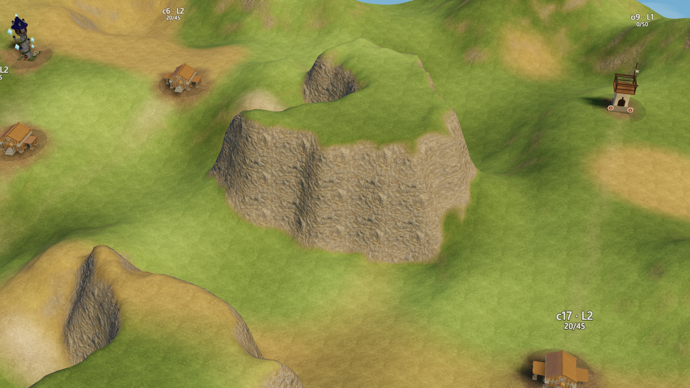

地形渲染与坡度通行
结论先说：地形显示面不再按格子铺平顶和竖墙，改成连续曲面加噪声扰动；通行判定删掉“单格高差”，只保留相邻两格之间的坡度。两件事各自独立，渲染怎么改都不再受碰撞约束。
一、问题
| 现象 | 原因 | 结果 |
|---|---|---|
| 地面上一片片菱形网格 | 路面在烘焙贴图里画 0.62 米石砖，灰缝只有半像素；整张图约 15 像素一米，放大后变成摩尔纹。另外旧显示面按格拼三角形，坡上每格的朝向都不同 | 远看像编织网，盖住了地形本身 |
| 悬崖像长方柱立在地上 | buildGridSurface 把崖顶格单独铺平顶，再沿格子边补竖直墙。墙段一米一段，崖顶轮廓就是格子边界 |
任何台地都是砖墙或方柱，拐角是直角 |
| 台地边缘一圈锯齿或薄片 | 补墙时按格角取顶面包络，斜对角的崖顶把包络抬高，低地一侧铺出一排很薄的纸片墙 | 崖脚出现鳞片和裂缝 |
| 规则说是高低差，实际又是坡度 | NavGrid.canStep 本来就在比 高差 / 水平距离，但规则字段叫 maxStepCm，兵种表也有一份 maxStepCm，读起来像“单格高差” |
调参时误以为改的是高低差，改了格子尺寸就失效 |
二、分层
| 层 | 内容 | 谁负责 |
|---|---|---|
| 数据 | 每格整数厘米高度、地表、阻挡、可走覆盖 | MapDef.grid，编辑器烘焙 |
| 显示 | 细分曲面、圆角崖口、岩面噪声、岩石着色 | buildGridSurface 与地形材质，纯视觉 |
| 通行 | 相邻两格的坡度与兵种上限 | NavGrid，寻路与可达范围 |
显示与通行只共享同一份格高，不再共享拓扑。显示面可以随便平滑、扰动、倒圆角，通行判定完全按原始格高算，任何一边调参都不会把另一边弄坏。
三、显示面
3.1 生成步骤
- 读取格心高度，按
smoothing做 1 到 2 次 1-2-1 可分离平滑。只平滑显示用的副本，原始格高不动。这一步把崖顶那圈一米锯齿摊圆，崖线不再是格子边界。 - 在显示高度场上做 Catmull-Rom 双三次插值。每个轴的插值结果都夹回参与插值的样本范围，去掉平台边缘的过冲鼓包和崖脚凹陷，得到单调的连续坡。
- 按坡度做水平扰动。坡度大的地方把采样点沿两层 simplex 噪声横向拧开，崖线因此是弯的，不再贴着一米网格。
- 叠分形起伏。平地只有
relief × 0.08，崖面铺满relief，再加一层随高度变化的横向层理。 - 按 2 或 4 个采样每格生成顶点，索引网格共享顶点，法线由三角面平均，整张地形一个网格，没有独立墙面。
3.2 参数
| 参数 | 默认 | 说明 |
|---|---|---|
samplesPerCell | 2 到 4 | 大图 0.5 米一个顶点，小图 0.25 米；由地图格数换算，上限 4 |
smoothing | 1 | 1-2-1 平滑次数；0 保留原始轮廓，2 更圆但崖口更软 |
relief | 0.55 米 | 崖面起伏上限，平地固定取 8% |
warp | 0.8 米 | 崖面水平扰动上限，平地几乎为零 |
seed | 地图种子 | 同一张图每次重建的噪声一致 |
170×130 格的高地地图，0.5 米顶点约 17.7 万三角形，整块地形重建约 210 毫秒。编辑器在地形笔画结束时重建一次，拖动过程不受影响。
3.3 材质
- 三平面投影的权重陡面削弱顶投影。竖直面不再吃被拉长的俯视贴图，竖条纹消失。
- 草与岩石的交界不能按
normal.y画一条等高线。片元里加两层世界噪声扰动阈值，交界变成犬牙交错。 - 陡的地方直接换成岩石色，不再只调亮度。岩石贴图本身很暗，混一层平均岩色，背光面不会黑成洞。
- 路面只画碎石底色和低频斑驳，不再画石砖网格，摩尔纹从源头消失。
四、开源方案
| 用途 | 采用 | 理由 |
|---|---|---|
| 噪声 | simplex-noise 4.0.3，MIT | 成熟、无依赖、可复现；比手写 value noise 少了方块感，直接 createNoise2D(seeded) |
| 插值 | Catmull-Rom 双三次 | 数学公式，不算轮子；关键是每轴夹取，避免过冲 |
| 材质 | three.js MeshStandardMaterial 与 onBeforeCompile | 三平面投影是常规做法，项目里已有地面细节层 |
| 网格 | 自建规则网格 | 地形是 2.5D 高度场，规则网格最省；用 marching cubes 只会把高度场变成一团圆角体积，还会引入悬垂，碰撞和贴地都要重写 |
五、坡度通行
5.1 判定
stepSlope = |h(to) - h(from)| × 1000 / run run = 相邻直走用格宽，斜走用格宽 × 1.414 可走 ⇔ 地表可走 ∧ 不在阻挡 ∧ stepSlope ≤ 兵种 maxSlopePermille ∧ 斜走两侧不贴角
没有第二条按“单格高差”的判定。格子从 1 米换到 0.5 米，同样的物理坡度只需要爬一半的高度，规则自动跟着变。
5.2 阈值
| 兵种 | maxSlopePermille | 约等于 |
|---|---|---|
| 精锐战士 | 260 | 14.6° |
| 骑兵 | 300 | 16.7° |
| 弓箭手 | 330 | 18.3° |
| 野蛮人 | 380 | 20.8° |
| 游侠 | 420 | 22.8° |
| 法师 | 700 | 35.0° |
地图级 climbCm 仍然保留，含义是“一格最多爬多少厘米”，除以格宽就是坡度上限。填了它，整张图的所有兵种共用这个上限；不填就按兵种表。
5.3 陡度字段
NavGrid 额外算一份 slopePermille(cell)，取四邻里最陡的一步。它只用于导航预览和编辑器着色，不直接封格：真正挡住移动的是跨过那条边的动作，不是站在坡脚这件事。
5.4 可达范围显示
可达范围不再单独铺一层贴片，而是写进地形网格的逐顶点属性 aReach：0 不可达、1 普通可走、2 可到建筑占地。地形材质按这个属性给地表染色，并按法线在陡面淡出。
旧做法是按格角高度拼贴片。崖边的可达格会有一个格角落在崖顶，贴片就被拉成贴着崖壁的竖三角，看起来像悬崖上也能走。改成顶点属性后，绿色跟着真实曲面走，陡面淡出，崖壁不会再被染色。
逻辑侧没有改动：reach.cells 仍然由同一套坡度判定洪泛得出。以高地地图 c3 出发为例，崖壁剖面在 1.1 米高的那格就断了，崖脚两格可达、崖壁和崖顶不可达。之前看到的是显示层的几何问题，不是网格越界。

六、验收




- 整张地图找不到沿格子边对齐的菱形或方块图案。
- 悬崖是连续岩面，轮廓不是一米折线，崖顶没有独立墙面。
- 同一段坡，1 米格和 0.5 米格的可走性一致，
packages/nav/tests/slope.test.ts覆盖。 - 像素级近景看不到竖条拉伸和石砖摩尔纹。
七、性能
新编辑器在地形笔刷拖动时，原来每个 pointermove 都重建整张地形：一次约 300 毫秒，拖动就是一帧一停。现在拖动只刷新笔刷矩形内的顶点和法线，松手后才完整重建一次。
| 操作 | 之前 | 现在 |
|---|---|---|
| 拖动一次，单帧耗时 p90 | 205 ms | 11 ms |
| 拖动一次，只刷新高度 | 整张重建 | 2 到 3 ms |
| 松手后完整重建，170×130 地图 | 约 300 ms | 50 到 70 ms |
- 局部刷新：
GridSurface.refresh只重算高度场和矩形内顶点，updateGridTerrainRegion只累加矩形周围的四边形法线，再统一归一化。 - 烘焙贴图与材质按内容键复用：键包含地表、道路、据点院落和风格。高度变化不重画，贴图和着色器程序都不重建。
- 草岩交界扰动从片元噪声改成逐顶点属性。原来每个像素要跑两层三维值噪声，约 32 次哈希；现在只做一次插值。
- 采样器去掉每顶点数组分配；平地直接跳过三层起伏噪声，地图上大部分格子是平的。
八、还没做
- 崖脚没有铺落石和碎岩。现在是干净的岩面接草地，近景略显安静。
- 坡道入口仍是一条三格宽的窄槽，靠显示面平滑成冲沟。要更自然得改地图生成器的台地配方。
- 台地顶面仍是平的。真实山体可以有起伏，但那需要生成器给顶面加噪声，不能靠显示面编。
- 没有做侵蚀模拟。当前的层理和起伏是噪声，不是水力侵蚀。